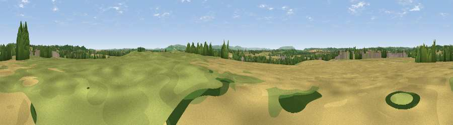

Viewpoint near Bidford on Avon
#24518 in England · top 52% of its area beats it · near Bidford on AvonWhere it is
The exact computed spot (SP 11109 52093). Click the marker for map links.
The view, rendered

A 360° render of this exact spot computed from the terrain model, tree cover and land cover — summer colours, afternoon light, calibrated against photographs of famous viewpoints. Real trees, hedges and buildings will differ in detail.
The panorama
Grey silhouette: terrain skyline in each direction (720 bearings, Earth curvature and refraction included). Dashed green: skyline with trees (+15 m) and buildings (+8 m) as obstacles. Blue strip: how far the ground is visible on each bearing.
Where the view opens
Wedge length = distance to the farthest visible ground on that bearing (vegetation-aware). Rings at 10, 25 and 50 km.
What fills the view
52% cropland · 29% grassland · 15% woodland · 4% built-up
Angular shares of the visible panorama (visual magnitude), not map area. Landscape diversity 0.48 (0–1 Shannon).
Key numbers
More beautiful places nearby
The staircase of upgrades: each row has a higher view potential than everything closer. Driving times are estimates from straight-line distance, calibrated against real road routing — check an actual route before setting out.
| Place | Direction | Drive | Score |
|---|---|---|---|
| Viewpoint near Binton | ENE · 3 km | ~7 min | 49.6 |
| Viewpoint near Binton | ENE · 3 km | ~8 min | 54.9 |
| Viewpoint near Exhall | NNW · 4 km | ~9 min | 62.1 |
| Viewpoint near Arrow | WNW · 6 km | ~13 min | 63.1 |
| Viewpoint near Meon Vale | SE · 9 km | ~18 min | 77.0 |
| Broadway Hill | S · 16 km | ~28 min | 77.7 |
| Viewpoint near Elmley Castle | SW · 18 km | ~32 min | 80.5 |
| Bredon Hill | SW · 19 km | ~33 min | 83.0 |
52.16699, -1.83900 · source: osm peak · position refined by local search. Computed location — check access rights before visiting.